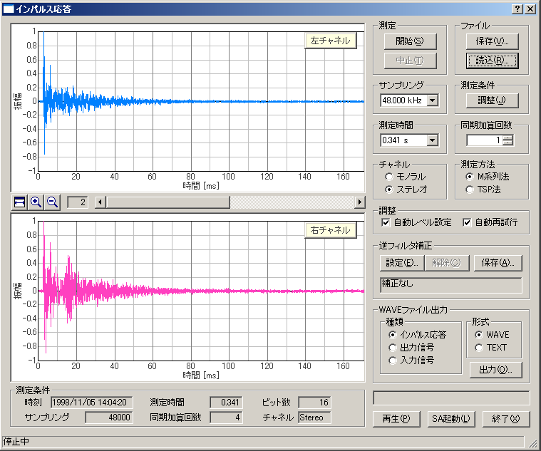

DSSF3 > RA > リファレンス
インパルス応答
- インパルス応答測定画面の説明
- インパルス応答/[保存]機能
- インパルス応答/[読込]機能
- インパルス応答/測定調整機能
- インパルス応答/逆フィルタ補正
インパルス応答の測定は、M系列信号またはTSP(Time-Stretched Pulse)信号を用いて行い、その測定データは画面に表示されるとともに、データベースやWAVEファイル、CSVファイルに出力することができます。データベースに保存した測定データは、音響分析システム(SA)で読み出して、残響時間など更に詳細な分析を行うことが可能となっています。
また、測定条件の設定をアシストする機能や、マイクやスピーカなどの不要なレスポンスを取り除く逆フィルタを使用することができます。

DSSF3 > RA > リファレンス